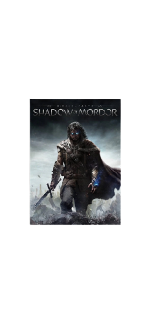
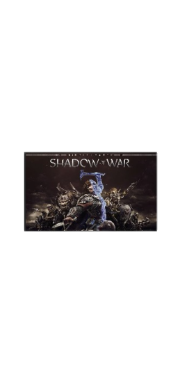
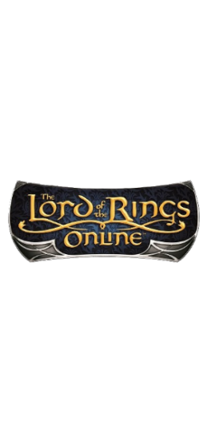

There are plenty of games set in the Tolkien universe. Here is a small selection
of games that could be worth testing out!



Fight through Mordor and uncover the truth of the spirit that compels you, discover the origins of the Rings of Power, and confront the evil in this new chronicle of Middle-earth.
An original story with the return of Talion and Celebrimbor, who must go behind enemy lines to forge an army and turn all of Mordor against the Dark Lord, Sauron.
The Lord of the Rings Online is a massively multiplayer online RPG set in J. R. R. Tolkien's Middle-earth, taking place during the time period of The Lord of the Rings.